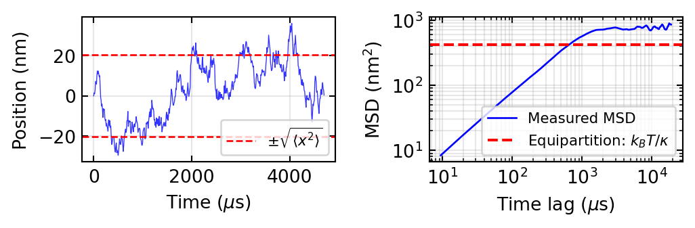
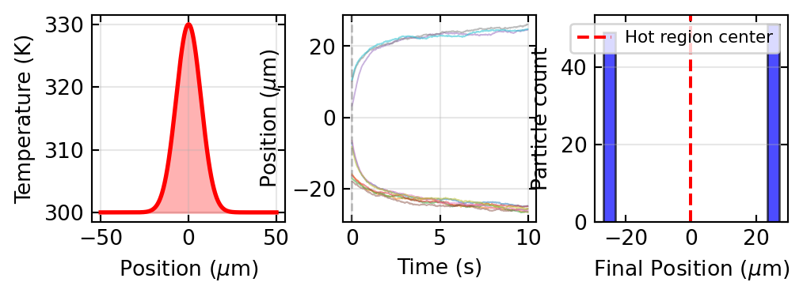
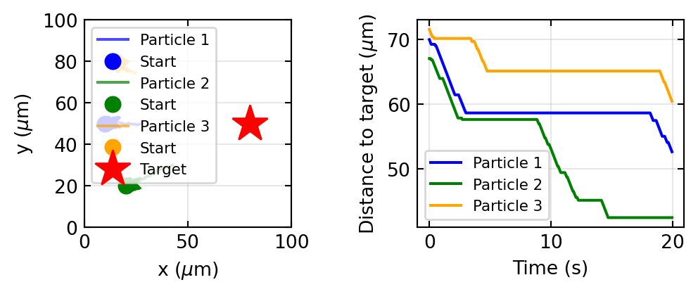
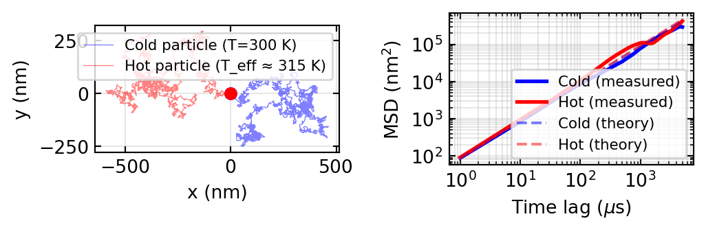
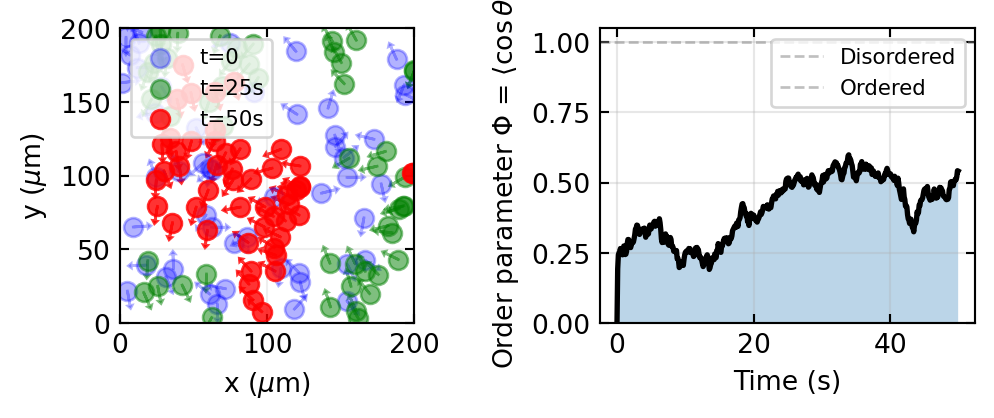

Theoretical <x²> from equipartition: 414.00 nm²
Measured <x²> from trajectory: 410.02 nm²
Trap stiffness: 10000000.00 pN/nmThis capstone lecture connects the optical concepts you have learned—from wave optics and Fourier optics to microscopy and light scattering—to the fascinating world of motion at microscopic scales. When light interacts with matter, it can do more than just illuminate or image: it can push particles, create temperature gradients, and enable navigation of microscopic swimmers.
The Molecular Nanophotonics Group (MoNa) at Leipzig University has pioneered experimental and theoretical approaches to harness light for controlling motion and studying active matter. In this lecture, we explore five interconnected topics:
By the end, you will understand how optics and light-matter interactions enable control and study of microscopic systems beyond what conventional passive microscopy can achieve.
Light carries momentum. A photon with frequency \(\nu\) has momentum \(p = h\nu/c = \hbar k\), where \(k = 2\pi/\lambda\) is the wave vector. When light is absorbed or reflected by matter, it transfers momentum, exerting a force.
Radiation pressure is defined as the momentum flux carried by electromagnetic radiation. For a beam with intensity \(I\) (power per unit area), the radiation pressure force on an absorbing surface is:
\[F_{\text{rad}} = \frac{I}{c}\]
For a perfectly reflecting surface, the force is doubled: \(F = 2I/c\).
Consider a typical laser pointer (1 mW) with wavelength 650 nm focused to a spot of 100 μm diameter. The intensity is roughly \(I = P/A \approx 10^3\) W/m². The resulting radiation pressure is \(F = I/c \approx 3\) pN (piconewtons). This tiny force is often negligible for macroscopic objects, but for microscopic particles (e.g., bacteria, organelles, colloidal spheres), it becomes significant because the surface-to-volume ratio is large.
Focused laser beams create intensity gradients in space. A dielectric particle placed in this gradient experiences a force toward the region of highest intensity — the gradient force. This is the physical principle behind optical tweezers.
For a dielectric sphere of radius \(a\) (with \(a \ll \lambda\)) in a focused Gaussian beam, the gradient force is approximately:
\[F_{\text{grad}} = \frac{\pi a^3 (\alpha - \alpha_{\text{medium}})}{3} \nabla I\]
where \(\alpha\) is the polarizability of the particle and \(\alpha_{\text{medium}}\) is that of the surrounding medium. The force points toward the intensity maximum, enabling three-dimensional trapping.
Key physics: The gradient force arises because the particle’s induced dipole experiences a stronger electric field on one side of the focus than the other. This dipole-gradient interaction is analogous to the force on an electric dipole in an inhomogeneous electric field.
The trapped particle experiences a restoring force proportional to its displacement from the beam center: \(F \approx -\kappa x\), where \(\kappa\) is the stiffness of the trap. Typical stiffness values for optical tweezers range from 10 pN/nm to 100 pN/nm, depending on laser power and beam geometry.
In 1986, Arthur Ashkin demonstrated the first optical tweezers using a single focused infrared laser beam to trap and manipulate micron-sized dielectric particles (and even living cells). This breakthrough earned him the 2018 Nobel Prize in Physics (shared with Gérard Mourou and Donna Strickland for work on high-intensity lasers).
Optical tweezers revolutionized single-molecule biophysics by enabling: - Manipulation of biomolecules (DNA, proteins, RNA) and cellular structures - Force spectroscopy — measuring forces during unfolding and binding - Studies of molecular motors like kinesins walking along microtubules - Manipulation of colloidal particles for self-assembly studies
The typical setup uses: - An infrared laser (e.g., Nd:YAG at 1064 nm) to minimize photodamage - A high-NA microscope objective to tightly focus the beam - Piezoelectric stage for 3D particle positioning - Back-aperture detection or quadrant photodiode for feedback
To quantify the trap stiffness \(\kappa\) experimentally, we exploit thermal fluctuations of the trapped particle. A particle confined by a harmonic potential has position fluctuations that follow the equipartition theorem:
\[\langle x^2 \rangle = \frac{k_B T}{\kappa}\]
where \(k_B\) is Boltzmann’s constant and \(T\) is temperature. From video microscopy, one can measure the mean-square displacement and invert this relation to find \(\kappa\).
Alternatively, we can measure the power spectrum of position fluctuations. The autocorrelation of position for a trapped particle in a viscous medium shows a characteristic timescale \(\tau = 6\pi\eta a / \kappa\) (where \(\eta\) is viscosity and \(a\) is radius). The corner frequency \(f_c = 1/(2\pi\tau)\) directly gives the stiffness.
Modern extensions use spatial light modulators (SLMs) — programmable phase masks that shape laser light in real time. By encoding interference patterns, one can create: - Multiple traps from a single laser beam - Rotating traps for applying torque - Time-varying potentials for complex manipulation - Custom intensity distributions matching experimental needs
The MoNa group employs such techniques for advanced manipulation of micro-swimmers.
Thermophoresis (also called thermomigration or the Soret effect) is the directed motion of particles in response to a temperature gradient. Particles tend to drift toward cooler or warmer regions depending on their chemical nature and the solvent.
The drift velocity is given by:
\[v_{\text{thermo}} = -D_T \nabla T\]
where \(D_T\) is the thermal diffusion coefficient (or thermal mobility). The related Soret coefficient \(S_T\) expresses this in terms of the concentration gradient generated by a temperature gradient at equilibrium:
\[S_T = -\frac{1}{c(1-c)} \left. \frac{\partial c}{\partial z} \right|_{T \text{ gradient}}\]
For many particles in water, thermophoresis drives motion toward warmer regions (thermophilic, \(D_T > 0\)), though some particles move toward cooler regions (thermophobic, \(D_T < 0\)).
Physical origin: Thermophoresis results from asymmetric solvation at different temperatures. As temperature varies around the particle, the local viscosity, diffusivity, and hydration shell change, breaking the symmetry and producing a net force.
A Janus particle has two distinct hemispheres with different properties (e.g., one coated with gold, one bare). When such a particle absorbs light asymmetrically, one face heats up more than the other, creating a local temperature gradient around the particle itself.
The heated surface drives thermophilic particles away from it, creating a self-propulsion mechanism. The swimming velocity is approximately:
\[v_{\text{swim}} \approx D_T \Delta T / a\]
where \(\Delta T\) is the temperature difference across the particle and \(a\) is its radius.
For a gold-coated sphere in water with absorbed laser power \(P\), the temperature rise is roughly:
\[\Delta T \approx \frac{P}{4\pi \kappa a}\]
where \(\kappa\) is the thermal conductivity of the medium. Typical laser powers (milliwatts) easily achieve temperature rises of tens of Kelvin, enabling swimming velocities of micrometers per second.
Control via laser: - Switching the laser ON/OFF switches swimming ON/OFF - Changing laser position changes the direction of the temperature gradient - Controlling laser power modulates the swimming speed
This light-driven propulsion is ideal for navigation and control of micro-swimmers.
The swimming velocity depends on the absorbed optical power \(P_{\text{abs}}\), which depends on: - Laser power \(P_{\text{laser}}\) - Particle size and optical properties - Scattering and absorption cross-sections
For a gold nanoparticle with good photothermal absorption, most absorbed power goes into heating. A rough estimate for swimming velocity scaling is:
\[v_{\text{swim}} \propto \sqrt{P_{\text{abs}}}\]
This scaling arises from the competition between the thermophoretic driving force (proportional to \(\Delta T\), which grows with power) and Stokes drag (which depends on velocity). The detailed relationship depends on particle geometry, material, and fluid properties.
Micro-swimmers (e.g., self-propelled particles, bacteria, algae) move by converting energy into directed motion. However, rotational diffusion — random rotation due to thermal noise — constantly randomizes their direction.
In the absence of external cues, a swimmer explores space in a random walk with a persistence length \(\ell_p = v/D_r\), where \(v\) is swimming speed and \(D_r\) is the rotational diffusion coefficient. Typical persistence lengths are micrometers to tens of micrometers, much smaller than the centimeter scale of a petri dish.
Photon nudging exploits a clever insight: instead of steering (which requires continuous force in the transverse direction), we use real-time feedback to:
This strategy greatly enhances navigation efficiency without the need for complex feedback steering.
The control loop works as follows:
while particle_not_at_target:
1. Acquire microscopy image
2. Detect orientation θ and position (x, y)
3. Calculate angle toward target: θ_target
4. If |θ - θ_target| < threshold:
Turn on laser (push along current direction)
5. Else:
Wait (let Brownian rotation randomize orientation)The key advantage: the particle only moves when already pointing in a favorable direction. Brownian motion and rotational diffusion naturally randomize the orientation; we simply “take advantage” of favorable configurations.
Researchers at Leipzig have experimentally demonstrated photon nudging to autonomously navigate thermophoretic Janus particles toward target regions. The swimmers successfully reach designated spots without continuous active steering, illustrating how simple algorithmic control combined with passive stochastic dynamics can achieve directed motion.
Brownian motion is the random walk exhibited by microscopic particles suspended in a fluid. The Einstein relation connects diffusion to friction:
\[D = \frac{k_B T}{6\pi\eta a}\]
where \(D\) is the diffusion coefficient, \(\eta\) is viscosity, and \(a\) is the particle radius. For a particle at temperature \(T_{\text{medium}}\) (the bulk fluid temperature), this relation fully describes diffusion.
Now consider a photothermal nanoparticle (e.g., gold nanoparticle absorbing laser light). Its surface temperature \(T_{\text{surface}}\) is much higher than the bulk \(T_{\text{bulk}}\). A temperature gradient exists in the fluid around the hot particle.
Questions arise: - Does the particle diffuse faster? By how much? - What temperature do we use in the Einstein relation? - Can we measure this effect?
The concept of an effective temperature \(T_{\text{eff}}\) captures the anomalous diffusion. For a heated particle immersed in cooler fluid:
\[D_{\text{measured}} = \frac{k_B T_{\text{eff}}}{6\pi\eta a}\]
where \(T_{\text{eff}} > T_{\text{bulk}}\) in the vicinity of the particle. The effective temperature is observable-dependent: - Radial diffusion (away from particle) sees a different \(T_{\text{eff}}\) than - Tangential diffusion (around the particle)
The anisotropic diffusion tensor reflects the non-uniform temperature field.
A powerful technique to measure hot Brownian motion is photothermal correlation spectroscopy (PCS):
The MoNa group has developed and applied photothermal correlation spectroscopy to measure temperature gradients and effective temperatures of heated gold nanoparticles in water and polymer solutions.
Hot Brownian motion is relevant for: - Plasmonic heating in photothermal therapies — understanding how heat affects cellular transport - Nanomotor efficiency — thermal effects on protein folding and molecular motor function - Microfluidic control — exploiting thermally-enhanced diffusion for mixing - Single-molecule spectroscopy — corrections needed when molecules are heated by intense focus
Recent advances apply reinforcement learning (RL) to micro-swimmer control:
The learned policies often discover non-intuitive strategies that outperform hand-coded algorithms. For example, an RL agent might learn to “overshoot” a turn or create oscillatory motion to escape local minima — strategies not immediately obvious from first principles.
Active matter refers to systems of particles that individually consume energy to produce directed motion (self-propelled particles, bacteria, flocks). The collective behavior of such systems exhibits:
Optical manipulation allows precise spatial and temporal control of individual particles, enabling experiments on: - How does communication (biochemical, mechanical) affect swarming? - Can light guide self-organization toward functional structures? - What is the minimal “intelligence” required for collective motion?
Practical applications drive ongoing research:
The convergence of optical manipulation, machine learning, and microfluidics promises revolutionary new capabilities in medicine and biotechnology.
Below, we simulate thermal fluctuations of a trapped particle and extract stiffness from mean-square displacement.

Theoretical <x²> from equipartition: 414.00 nm²
Measured <x²> from trajectory: 410.02 nm²
Trap stiffness: 10000000.00 pN/nm
Initial mean position: -0.72 μm
Final mean position: 0.52 μm
Drift toward warm region: 1.24 μm
Particle 1: 72 nudges, final distance = 52.7 μm
Particle 2: 102 nudges, final distance = 42.5 μm
Particle 3: 46 nudges, final distance = 60.5 μm
Cold particle diffusion coefficient: 2.20e-11 m²/s (21.96 μm²/s)
Hot particle diffusion coefficient: 2.31e-11 m²/s (23.06 μm²/s)
Enhancement factor: 1.05x
Initial order parameter: 0.000
Final order parameter: 0.541
Increase: 0.541This lecture has connected light and motion across multiple scales and phenomena:
Optical forces arise from momentum transfer and intensity gradients, enabling precise 3D trapping (optical tweezers, Ashkin’s Nobel Prize).
Thermophoresis shows how light-induced temperature gradients drive particle motion — a key mechanism in self-propelled particles and photothermal systems.
Photon nudging demonstrates intelligent control strategies that exploit stochasticity rather than fighting it, achieving autonomous navigation without continuous steering.
Hot Brownian motion reveals that heated particles diffuse anomalously, with effective temperatures that depend on position and observable — important for understanding thermal effects in optical manipulation.
Machine learning and active matter open new frontiers in autonomous control, collective behavior, and applications from drug delivery to lab-on-chip devices.
The Molecular Nanophotonics Group at Leipzig University (https://home.uni-leipzig.de/~physik/sites/mona/) has made major contributions to both the theory and experiments in these areas, including:
These topics represent the cutting edge of nanophotonics — the convergence of optics, thermal transport, and molecular dynamics at the nanoscale. As you progress in your physics career, you may discover new ways to apply light for manipulating and controlling matter, pushing the boundaries of what is possible in medicine, nanotechnology, and fundamental science.
Further Reading:
End of Lecture 16